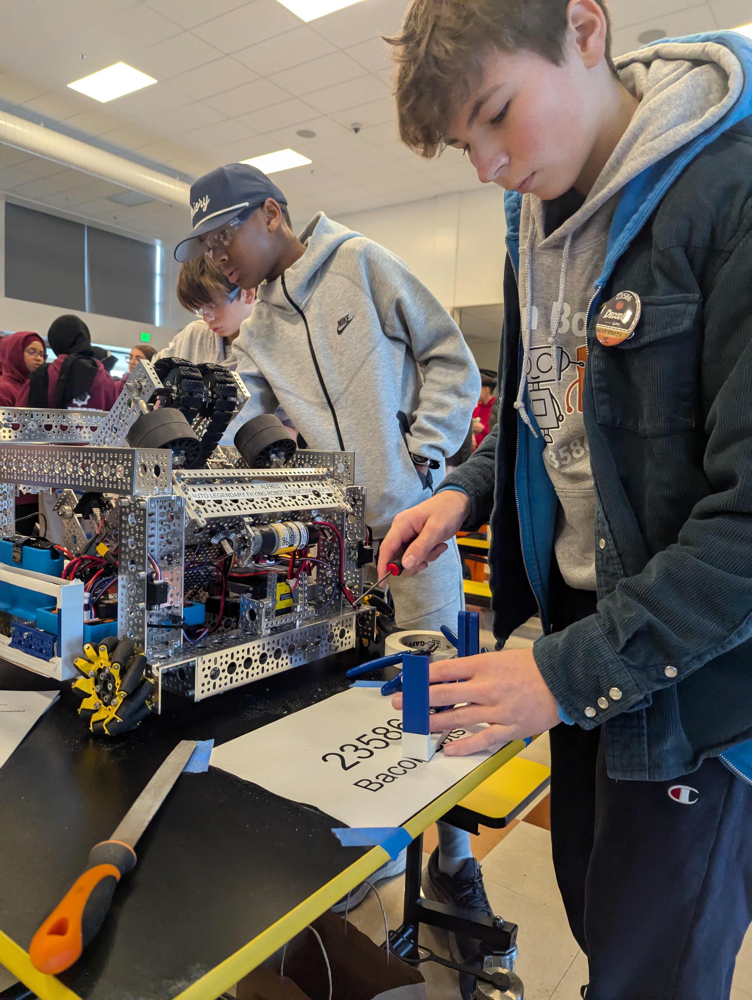

Decode
Season 2025–26 · DECODEThis is our current robot for the Decode season. This has been our most successful robot to date! Our robot this year used a fixed angle shooter and a mecanum drivetrain. It used drive encoders and april tag localization. We averaged 68.4 points solo. This was our first robot to ever have full advanced autonomous capabilities, thanks to an advanced pathing algorithm called Pedro Pathing.
- DriveMecanum
- ScoringFixed-angle shooter
- AutoPedro Pathing
- Record2–8–0 · 2 QTs